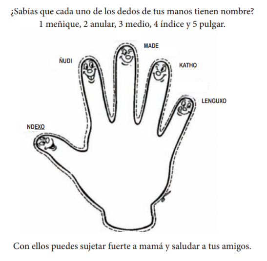
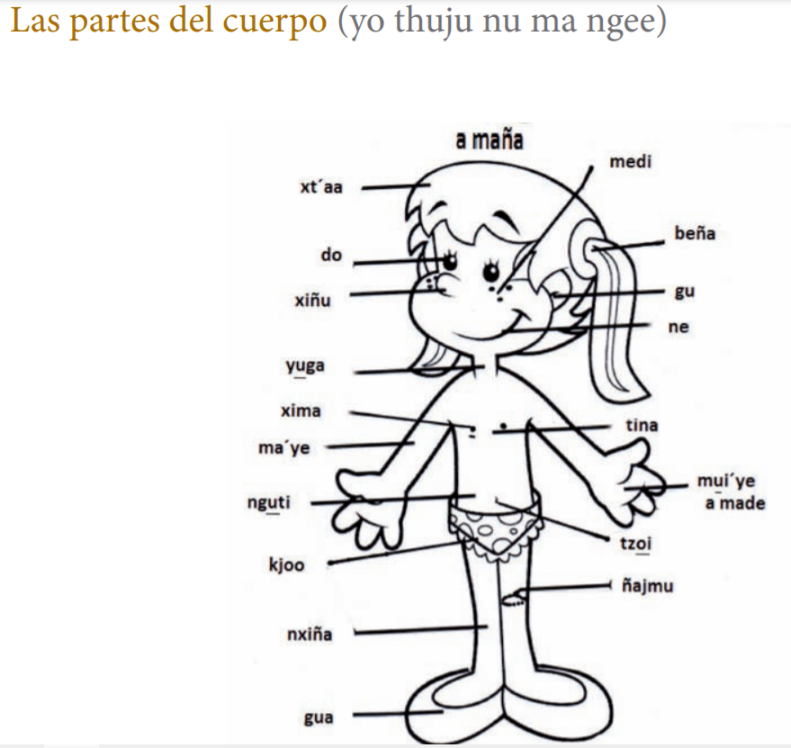
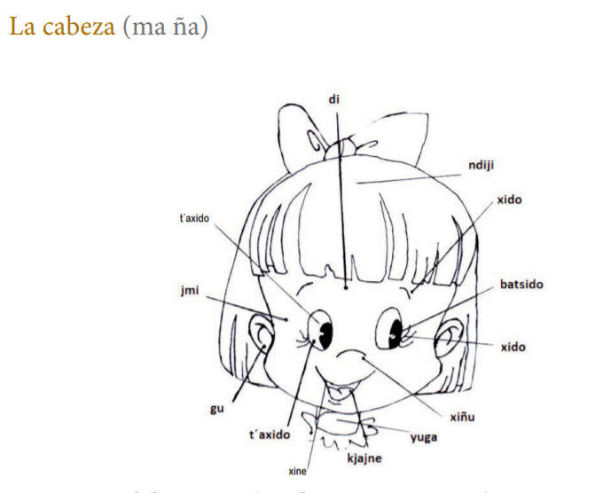
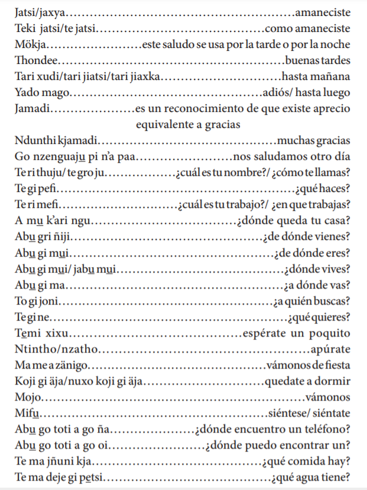
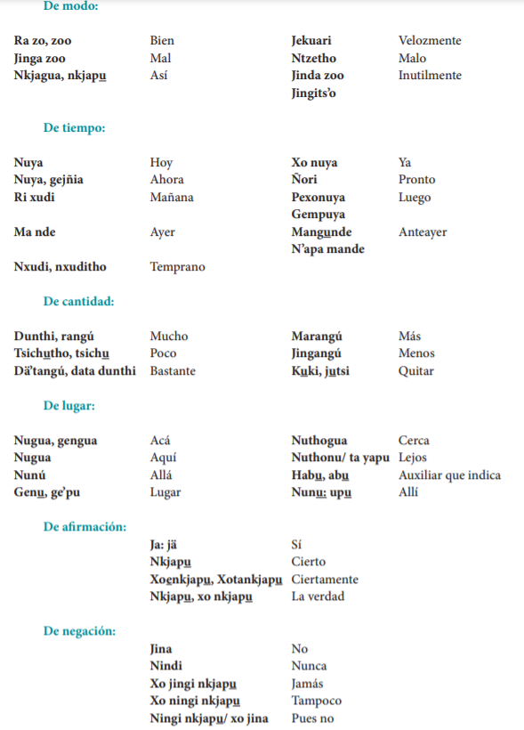

Históricamente este municipio se le considera como la cuna de los otomíes de la región centro. Antiguamente este municipio llego a fundarse en lo que hoy ocupa el territorio de la comunidad de Jiquipilco el Viejo o Ndongu (casa de la piedra o casa grande). El origen de la palabra Temoaya proviene del náhuatl “temoayan” y se compone de los vocablos Temoaya, derivado del verbo temo, cuyo significado es “bajar o descender”, y yan corresponde al efecto de la acción. Por lo tanto Temoaya significa “lugar donde se desciende” o “lugar por donde todos descienden”.




